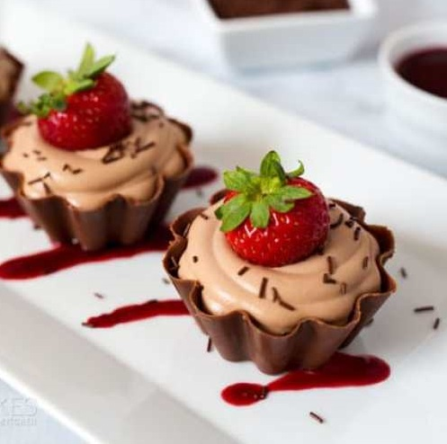
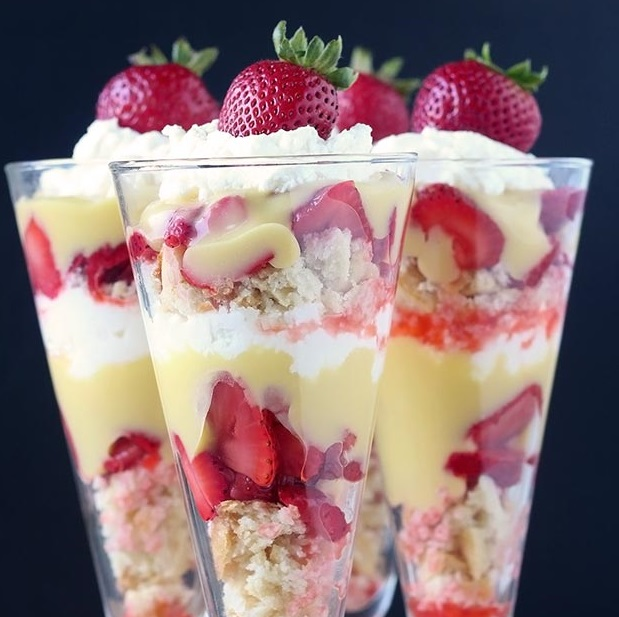
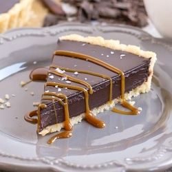

|  |
Chocolate Mousse Cups
- 6 ounces milk chocolate
- 3 large egg yolks
- 3 tablespoons sugar
- 1 1/2 cups heavy cream, divided
- 1 teaspoon vanilla extract
- 8 chocolate bowls
- In a glass bowl, microwave chocolate on 50% power for 1 minute. Stir. Continue microwaving in 30 second increments until chocolate is melted and smooth. Set aside.
- In a medium saucepan, whisk together egg yolks and sugar. Whisk in 1/2 cup heavy cream. Cook over medium heat, stirring constantly, until mixture coats back of spoon and starts to bubble around the edges, about 5 minutes. Remove from heat; whisk in melted chocolate and vanilla. Chill until cool.
- In a large mixing bowl, beat remaining heavy cream until stiff peaks form. Stir 1/3 of whipped cream into cooled custard mixture, then gently fold in the remaining with cream.
- Spoon into chocolate bowls; chill, covered, at least 30 minutes or up to 3 days.
- Serve garnished with strawberries, berry coulis and chocolate sprinkles, if desired.
|
|  |
Strawberry Shortcake
- 1 lb of organic strawberries(2 cups)
- 1 tablespoon of raw honey
- 2 tablespoons of lemon juice
- 2 cups of whipped cream
- 1 1/2 cups of lemon curd
- 1-2 scones
- If using fresh strawberries, wash, hull, and slice the berries and place them in a bowl. If using frozen strawberries, simply dump them into a bowl and move onto the next step. Pour the honey and fresh lemon juice over the strawberries, stir well, and let the strawberries sit on the counter to draw out the juices.
- If you're going to be gone a few hours while they're macerating, stick them in the fridge until you're back. And if you're working with frozen strawberries, leave them on the counter so they can come up to room temperature before making the parfaits.
- When everything is ready, break the scones up into chunks and then layer each ingredient (scones, strawberries, lemon curd, and whipped cream) into the parfait glass until filled up. If desired, pour some of the juices that accumulate from the strawberries onto the scones as you build each layer.
- Top with a strawberry (if you have any left over) and enjoy! These should last a few days in the fridge if you want to make them ahead of them, although the texture of the scone may soften considerably.
|
|  |
Chocolate Tart
- 1 1/2 cups cookie crumbs
- 6 Tbsp unsalted butter
- 1/4 cup granulated salt
- 12 oz good quality dark chocolate
- 8.5 oz heavy whipping cream
- 4 Tbsp unsalted butter
- Combine all ingredients in a medium bowl until crumbly. Press firmly into a 9" tart pan (sides first, then bottom).*** Bake for 7-8mins. Cool completely in pan.
- Place chopped chocolate and butter into a large bowl.
- In a small saucepan, bring cream just barely to a simmer. Pour over chopped chocolate and cover bowl immediately with plastic wrap. Let stand 5 mins. Stir with a spatula until combined and smooth.
- Pour into cooled tart shell and allow to set - overnight at room temperature or 1-2 hours in the fridge.
- Sprinkle with sea salt and drizzle with dulce de leche (or any other sauce) if desired. Serve at room temperature.
|